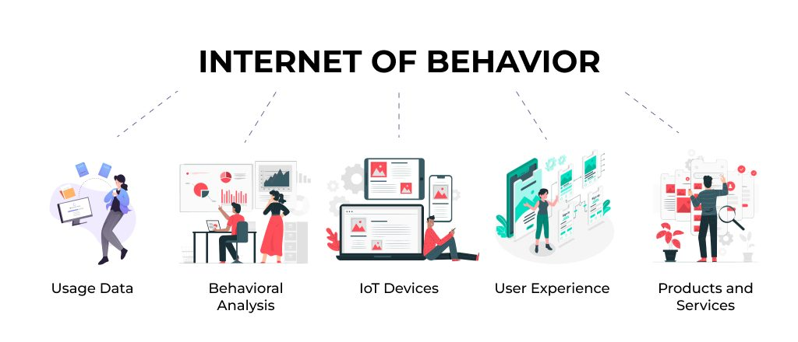

Top 4 inovasyon teknolojik pou ane 2025 lan
1-Otomatizasyon Pwosesis Robotize:
1-Otomatizasyon Pwosesis Robotize:
RPA (Otomatizasyon Pwosesis Robotize) otomatize pwosesis biznis tankou travay repetitif, operasyon estandatize, pwosesis done, menm repons imel.
Tankou nou menm, robo RPA yo kapab konprann sa ki sou yon ekran, navige nan diferan sistèm, fè sezi kòrèk, ekstrè done, epi fè yon pakèt aksyon predefini.
Sa bay plis espas operasyonèl pou kolekte done, diminye chay travay sou anplwaye yo, epi amelyore rezilta biznis yo. Anplis, li pèmèt sèvis vin pi rapid ak plis efikasite.
Pou pale de RPA (Otomatizasyon Pwosesis Robotize) fok avan tou nou pale de AI (Entèlijans atifisyèl). Paske Entèlijans atifisyèl entegre nan RPA, li ede konpayi yo
prevwa pann ekipman, optimize pwosesis pwodiksyon an, epi diminye gaspiyaj. Algoritm aprantisaj machin yo pèmèt yon analiz ki pi presi ak yon desizyon otomatik, sa ki ogmante efikasite ak pwodiktivite robo RPA yo.
2-Metavès:

Teknoloji sa yo ki ap parèt la tankou reyalite ogmante (AR), reyalite vityèl (VR) ak entènèt la pèmèt kreyasyon metavès la, yon espas vityèl pataj kote mond reyèl la ak mond dijital la melanje. Metavès la se yon kopi fidèl oswa yon vèsyon kreyatif nan anviwònman reyèl la kote itilizatè yo, atravè avatar pèsonalize, ka kominike youn ak lòt ak anviwònman dijital la, patisipe nan aktivite sosyal, travay, aprann, epi menm fè komès epi detann ou ( komanse gen de plis an plis konpagni jwèt ki ap itilize metavès lan). Gras ak AR ak VR, konpayi yo ka kreye espas kote moun kolabore, fè fòmasyon ak demonstrasyon, epi fè tranzaksyon an tan reyèl, bay yon eksperyans entèaktif ki sanble ak lavi reyèl.Teknoloji sa yo ede antrepriz prevwa bezwen, optimize pwosesis, ak redui gaspiyaj pandan yo ap ogmante efikasite ak pwodiktivite. Gen deja egzanp ekonomik enpòtan: Nike te fè anpil revni pa vann tenis vityèl, epi konpayi tankou Accenture bati anviwònman travay metavès pou pèmèt anplwaye travay san prezans fizik. Gwo konpayi teknoloji tankou Meta, Microsoft, Google ak Nvidia ap envesti fò nan sa a, epi yo prevwa ke metavès la ka kreye nouvo opòtinite ekonomik ak sosyal e potansyèlman ajoute gwo valè nan ekonomi mondyal la anvan 2030. Metavès la gen kapasite pou transfòme fason nou viv, travay, ak kominike, pandan l ap louvri chemen pou nouvo modèl biznis, fòmasyon ak eksperyans kreyatif.
3-Telesante:
Malgre pifò pwogrè ki pi enpòtan nan domèn medikal yo reyalize gras ak teknoloji, toujou gen kèk ti rezistans jodia, men pandemi a montre konbyen teknoloji vin esansyèl nan swen sante. Telesante se pratik swen sante a distans ki sèvi ak teknoloji enfòmasyon ak kominikasyon pou fasilite prevansyon, dyagnostik, tretman ak swivi medikal; li pèmèt pasyan resevwa swen san yo pa kite kay yo oubyen jwenn yon dyagnostik pou konnen si yo bezwen ale wè yon doktè. Li gen ladann aplikasyon sante sou telefòn, videokonferans an dirèk, telekonsiltasyon ak doktè, tele-ekspètiz ant pwofesyonèl, telesiveyans atravè aparèy konekte, teleasistans ak repons medikal dijans, teleswen kote swen yo bay a distans pa yon famasyen oswa yon enfimyè, epi tele-edikasyon pou fòmasyon pwofesyonèl sante a distans. espesyalman pou moun ki rete lwen pwofesyonèl sante, telesante respekte menm egzijans kalite ak konfidansyalite tankou konsiltasyon an prezans. Ekspè yo prevwa itilizasyon telesante ap grandi anviwon 15% pa ane, sitou nan zòn riral kote aksè a swen sante limite.
4-Entènèt Konpòtman (IOB) :
Entènèt Konpòtman (IOB) se teknoloji ki rasanble epi analize done konpòtman itilizatè sou entènèt ak lòt sous pou enfliyanse ak adapte eksperyans yo. Li itilize algoritm aprantisaj machin ak entèlijans atifisyèl pou swiv fason moun kominike, sa yo prefere, modèl navigasyon yo, vitès aksyon yo, vire agresif oswa lòt evenman, epi sèvi ak bout fidbak pou modifye konpòtman oswa kontni an tan reyèl. Atravè IOB, sèvis tankou taksi oswa konpayi lojistik ka siveye pèfòmans chofè, vitès, frenaj, arè soudin,pou evalye sekirite ak efikasite epi pran mezi ki nesesè; menm prensip la aplike nan maketing dijital, e-commerce, edikasyon sou entènèt ak sèvis kliyan pou bay rekòmandasyon pi presi, ogmante angajman ak satisfaksyon itilizatè. Teknoloji sa a pèmèt konpayi yo konprann bezwen kliyan yo pi byen, ofri solisyon adapte, ogmante lavant ak fidelite, epi amelyore eksperyans itilizatè atravè pèsonalizasyon ak aksyon otomatik. Sepandan, itilizasyon IOB leve gwo kesyon sou vi prive ak etik; li enpòtan pou aplike mezi solid pou pwoteksyon done, transparans, ak kontwòl itilizatè pou anpeche abi ak garanti konfyans piblik.